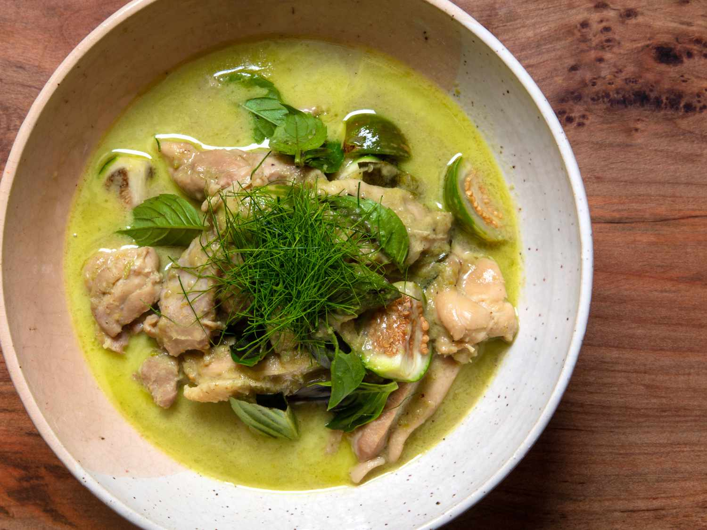

THAI GREEN CURRY RECIPE

One of Thailand's signature dishes, the Thai Green Curry, has also become one of the country's most famous culinary exports.
With the spread of Thai cuisine throughout the world, people who have never set foot in Thailand may well have tasted a Thai green curry.
INGREDIENTS
- 5 tablespoons coconut cream
- 3 tablespoons green curry paste
- 1 teaspoon fish sauce
- 180ml stock
- 180g sea bass fillet
- 2 washed and torn kaffir lime leaves
- 3 red or green chillies
- A few pea aubergines
- Handful of picked Thai basil leaves
STEPS
- Heat the coconut cream, add 3tbsp of curry paste and simmer over medium high heat, stirring regularly until fragrant (about 5 minutes).
- Season with fish sauce then moisten with the stock.
- Bring to the boil then add the fish together with the pea aubergines and simmer just long enough to cook through.
- Finish with the lime leaves, chillies and basil.
-